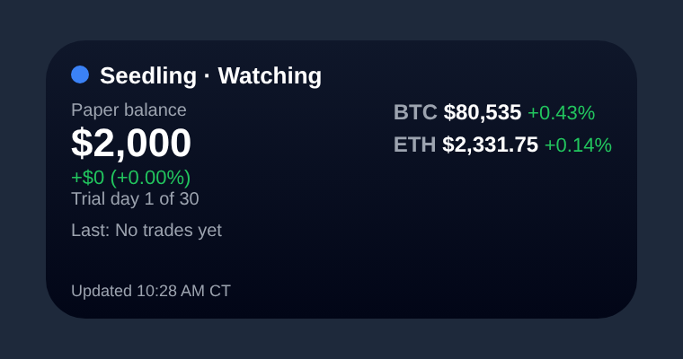

📱 Home-screen widget

- Install the free Scriptable app from the App Store.
- Tap Copy widget script above.
- Open Scriptable, tap +, paste, and rename the script to Crypto Team (tap the title at top). Tap Done.
- Go to your Home Screen, long-press an empty spot, tap Edit → Add Widget, search Scriptable, pick Small or Medium, tap Add Widget.
- Long-press the new widget → Edit Widget → Script: Crypto Team. Leave "When Interacting" as Run Script (tapping opens the dashboard).
It refreshes about every 5 minutes (iOS decides the exact timing). If offline, it shows the last saved data.
Loading…
Raw script · Back to dashboard